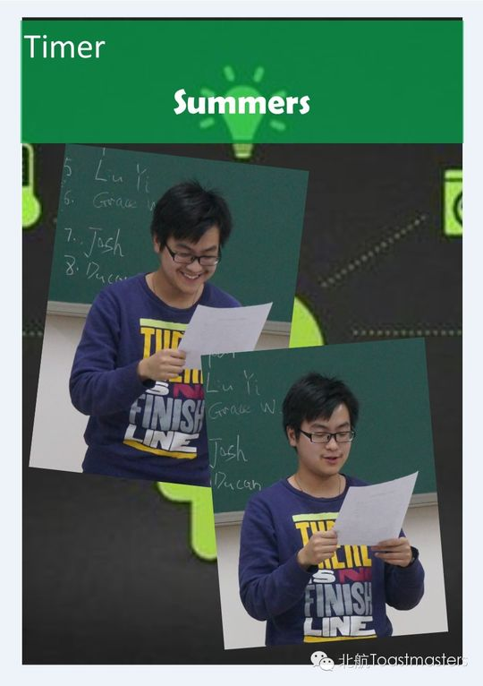
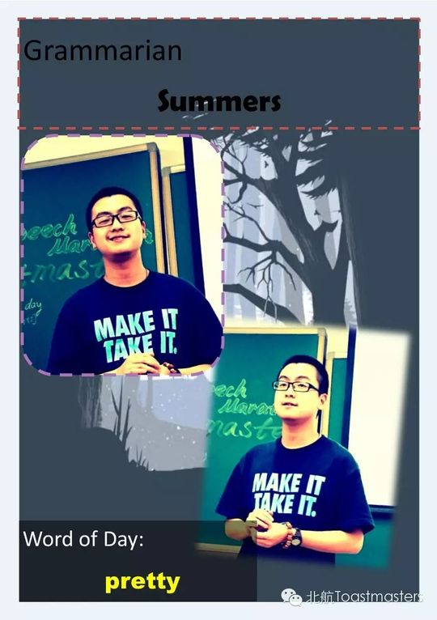
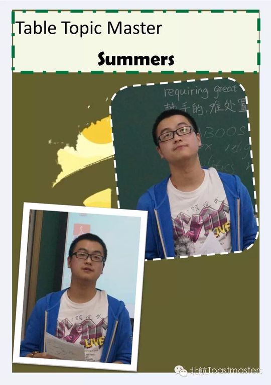
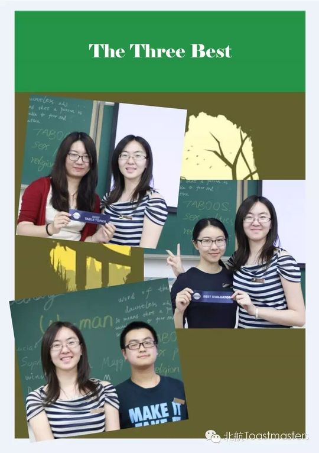
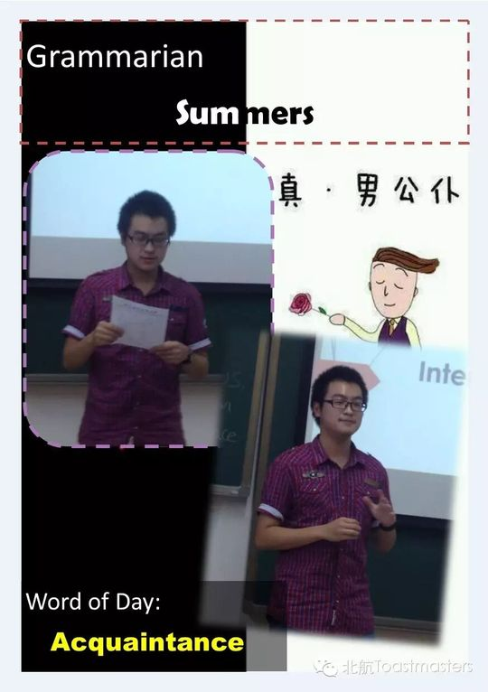
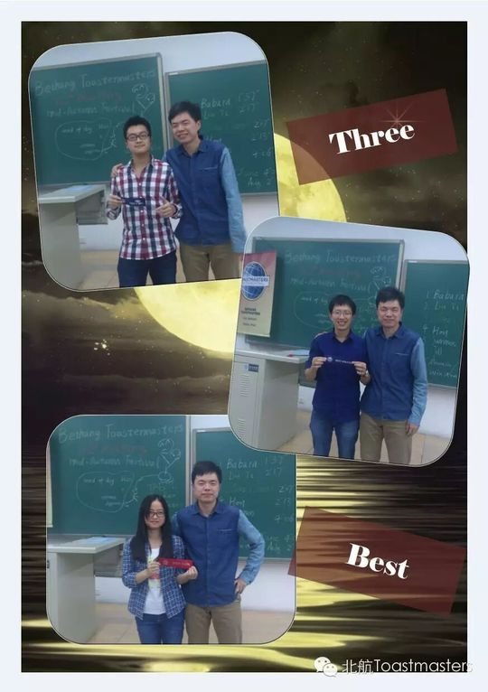
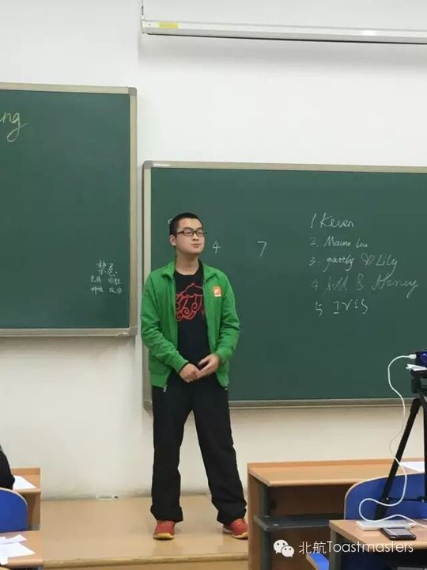
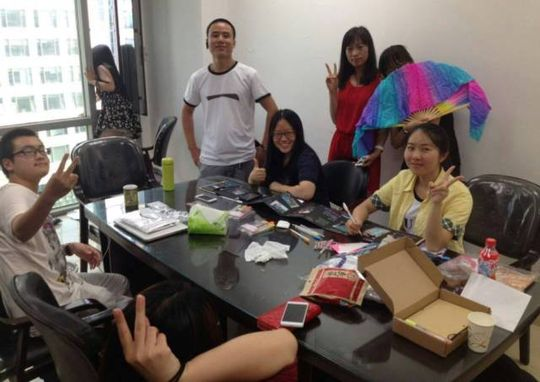
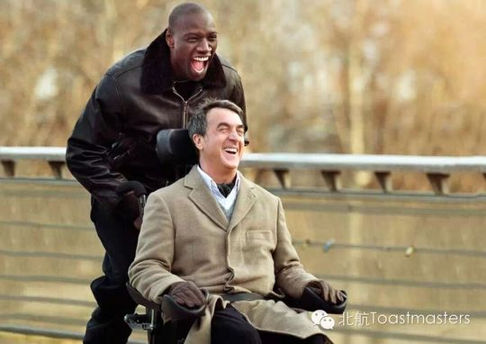
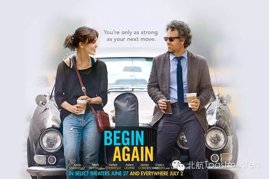

Summers
Summers 是北航头马 2015 年最具喜剧天赋的成员之一。最早能在 2015 年 5 月第 96 次会议见到他的身影——那次他担任即兴演讲主持人（TTM），主题是 Road Rage；同月底的招新海报上，"小Summers"已经是俱乐部里被大家熟悉的活跃面孔。6 月第 98 次会议，他完成了破冰演讲 CC1《Watch and Learn》，从"看电影也能学习"讲起，正式踏上自己的头马之路。
进入 2015 年秋季招新季，Summers 进入高产期：第 113 次会议带来 CC2《My Driving License》，用考驾照撞树的糗事逗乐全场，凭酷炫发型与佛珠形象摘得 Best Prepared Speaker；第 117 次会议的 CC4《Love Story》延续他"小学之王"的段子线，body language 与 vocal variety 被纪要评为"完美"，结尾却出人意料地煽情，喊出"我是一只等待幸福的单身狗"；第 120 次会议又带来 CC5《Things About Growing Up》，讲述长大路上的趣事与感慨。在俱乐部首次中文会议（第 115 次）上，他更是反其道而行，用中文讲了一篇《我爱英语》，回顾自己因英语出众而成"小学之王""高中之王"的经历，把日本外教那句"Fighting! Fighting!"演成了全场爆笑。
除了备稿，Summers 也是会议运转的重要一环。他多次担任即兴主持人（第 119 次"一生"、第 96 次"Road Rage"），并主持了第 118 次"11.11"主题会议，是值得信赖的台上担当。他性格幽默随和，自评"脾气好"，又懂星座，肢体表演极具感染力，被公认是俱乐部里最会逗乐大家的人之一。
2016 年圣诞晚会上，已"远在家乡"的 Summers 仍隔空为大家送来一个小短剧，老伙伴打趣"中国的演艺圈需要你来拯救"。这份在离开后依然惦记俱乐部、依然带来欢笑的心意，正是这位头马人留给北航头马最温暖的注脚。
里程碑
- 2015-05-22 首次登台担任 TTM ↗第 96 次会议'Road Rage'担任即兴演讲主持人，是可见最早的活跃记录。
- 2015-06-05 完成破冰演讲 ↗第 98 次会议带来 CC1《Watch and Learn》，正式开启头马之路。
- 2015-10-14 斩获 Best Prepared Speaker ↗第 113 次会议以 CC2《My Driving License》获最佳备稿演讲。
- 2015-10-23 俱乐部首次中文会议献声 ↗在北航头马有史以来第一次中文会议上，用中文讲了《我爱英语》。
- 2016-01-01 离校后隔空送祝福 ↗2015 圣诞晚会上已'远在家乡'，仍隔空为大家带来一个小短剧。
闯关之路 · Competent Communication
做过的演讲 · 5 场
担任过的职务 · 俱乐部官员
担任过的会议角色
为俱乐部做的事
- 多次担任即兴主持人（TTM）与会议主持人（TM），支撑会议正常运转
- 在俱乐部首次中文会议上积极参与并献上中文备稿演讲，助力中文会议落地
- 以一流的肢体语言和接连不断的段子为会议带来欢乐气氛，是俱乐部公认的喜剧担当
- 完成 CC1、CC2、CC4、CC5 及中文 CC3 等多篇备稿演讲，持续推进自己的 CC 进阶之路
- 离校后仍隔空为圣诞晚会准备节目，延续对俱乐部的情谊
照片墙 · 时间线
 ✓
✓ ✓
✓ ✓
✓ ✓
✓
✓
✓
✓ ✓
✓
✓ ✓
✓ ✓
✓
✓ ✓
✓
✓ ✓
✓
✓
✓





完整足迹 · 15 次出现（点开，每条可跳转原文）
- 2015-05-20第96次 · 担任Table Topic Master主持Road Rage主题
- 2015-06-05第98次 · 破冰演讲《Watch and Learn》
- 2015-10-09第113次 · 会议预告：将做CC2演讲《My Driving License》
- 2015-10-14第113次 · 做CC2备稿演讲《My Driving License》，获最佳备稿演讲者
- 2015-10-19第114次 · 即兴演讲，演甘愿当小三被拒的情景，获最佳即兴演讲者
- 2015-10-22第115次 · 会议预告：将做CC3中文演讲《我爱英语》
- 2015-10-26第115次 · 做CC3中文备稿演讲《我爱英语》
- 2015-11-04第117次 · 会议预告：将做CC4演讲《Love Story》
- 2015-11-09第117次 · 做CC4备稿演讲《Love Story》
- 2015-11-11第118次 · 会议预告：担任第118次会议主持人(TM)
- 2015-11-17第118次 · 即兴演讲，与Bloomfield演表白情景
- 2015-11-19第119次 · 担任即兴演讲主持人(TTM)
- 2015-11-26第120次 · 预告备稿演讲Things About Growing Up (CC5)
- 2015-12-01第120次 · 备稿演讲Things About Growing Up (CC5)
- 2016-01-01第124次 · 124th meeting-Christmas Party minutes of